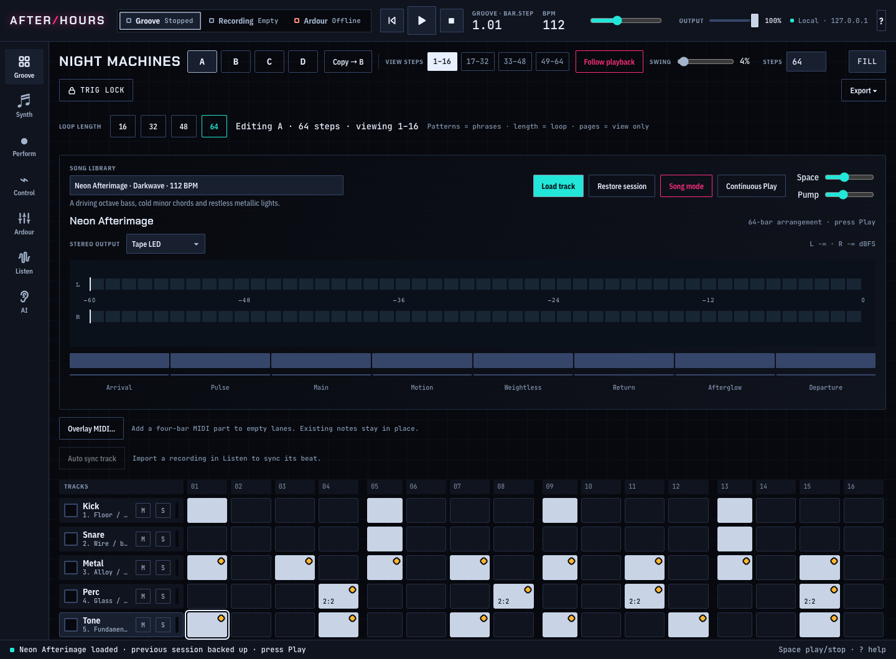

Find the groove.
Build sixteen-lane arrangements with per-step locks, swing, retrigs and probability. Move from a loop to a song, then export MIDI or WAV.
PATTERNS → ARRANGEMENTS → TRACKS
Turn a late-night idea into a track. Sequence a groove, play a synth, get lost in the sound.
AFTERHOURS is a local music studio with a sixteen-lane sequencer, playable instruments and room to experiment.
Python 3.11 + Node.js · Browser or macOS desktop

01 / FIND YOUR FLOW
One place to build a pattern, shape a sound and listen a little closer.
Build sixteen-lane arrangements with per-step locks, swing, retrigs and probability. Move from a loop to a song, then export MIDI or WAV.
PATTERNS → ARRANGEMENTS → TRACKS
Explore FM, analog-style and wavetable voices. Play with your computer keyboard or a USB MIDI controller. Map knobs, shape the mix and record a performance.
SYNTHS / MIDI LEARN / LIVE CONTROL
Import a recording, loop a phrase and try live effects. Measure an excerpt locally. Optional AI listening sends audio only when you choose to submit it.
LISTEN / LOOP / EXPERIMENT
02 / KEEP IT LOCAL
The sequencer, synths, effects and local signal measurements run without an API key. Save projects locally and take your work with you as JSON, MIDI or WAV.
AI musical feedback is optional and uses your own OpenAI API key with separate API billing. Sampled instruments need separately installed recordings; the included synth arrangements work without them.
Read how it works03 / MAKE IT YOURS
Install Python 3.11 and Node.js, open a terminal and start your studio.
Then open 127.0.0.1:8765 in your browser. Choose Neon Afterimage in the Song library, load the track and press Play.
Full setup guide# Get the studio
git clone https://github.com/Desperado/afterhours-oss.git
cd afterhours-oss
# Install dependencies and launch
npm run setup
bash start.shBUILT IN THE OPEN
Read the code, report a rough edge or bring an idea. AFTERHOURS is open-source software under Apache 2.0; bundled third-party components keep their own licenses.
Join in on GitHub